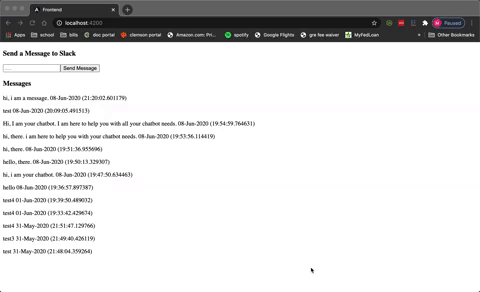

Projects
Chatbot Project
This Chatbot project showcases a quick project on Angular, Python Flask, and PostGreSQL DB. The idea is the frontend takes in a message, sends it to the Flask API, the API stores it in the database, and finally posts it in Slack. The frontend keeps a record of the past messages. I hosted this using AWS for a short period of time, using S3, elasticbeanstalk, and RDMS.

Blackbaud Capstone Project
For my senior capstone project, I partnered with Blackbaud labs to create a Twitch chatbot. The chatbot went off every x amount of minutes within the streaming channel. A video was filmed on more details of the project.
VPN
I used AlgoVPN to create a VPN within Digital Ocean.
DNS Server
To create a DNS Server, I utilized a rassberrypi and PiHole.